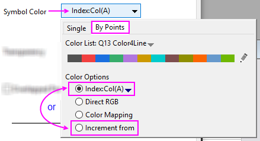
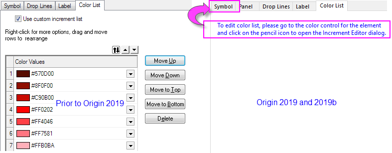

Die Registerkarte Farbliste (Details Zeichnung)
PD-Dialog-ColorList-Tab
_Color_List_Tab/Alert_icon.png) |
Beachten Sie, dass für Origin 2020 und höher die Registerkarte Farbliste vollständig entfernt wird. Um Farbe zu bearbeiten, gehen Sie zur Registerkarte des Elements, das Sie anpassen möchten, im Dialog Details Zeichnung (für Punktdiagramme z. B. die Registerkarte Symbol).
|
Origin-Versionen 2019b und älter
Diese Registerkarte Farbliste ist nur verfügbar, wenn Sie die Farbe Nach Punkten variieren. Wählen Sie dann Farboptionen für das Indexieren oder Inkrement von.
- 
Origin 2019 beginnt einen stufenweisen Ausstieg der Registerkarte Farbliste. Um eine Farbliste in Origin 2019 oder neuer zu bearbeiten, gehen Sie zur Farbsteuerung für ein bestimmtes Element -- Symbolrandfarbe, Linienfarbe, Musterfüllfarbe etc. -- und klicken Sie auf das Listenelement (nach unten weisender Pfeil) neben diesem Element. Klicken Sie auf der Registerkarte Nach Punkten (siehe Bild oben) und dann auf das Stiftsymbol _Color_List_Tab/Button_edit_pencil.png) am rechten Ende der Farbliste. Der Inkrementeditor wird geöffnet und gewährt Ihnen Zugriff auf die Farbliste.
am rechten Ende der Farbliste. Der Inkrementeditor wird geöffnet und gewährt Ihnen Zugriff auf die Farbliste.
- 
Informationen zum benutzerdefinierten Anpassen der Farbliste finden Sie unter folgenden Themen: